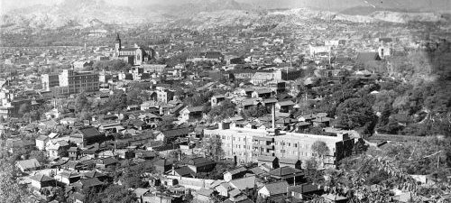
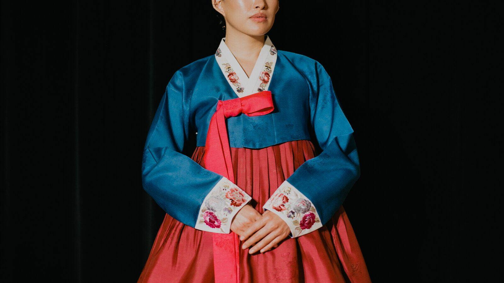
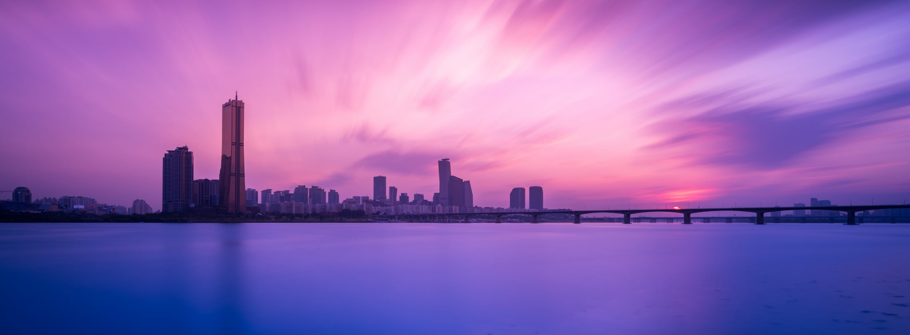

Sejarah



Pembentukan kota dimulai pada era Baekje, Wirye-seong, pada 17 SM.
Lokasi awal pembentukan kota diperkirakan berada di sekitar daerah
perbatasan Seoul yang sekarang. Di abad ke-11 Goryeo, yang
menggantikan Silla Bersatu, membangun istana musim panas di Seoul,
yang disebut sebagai "Ibu kota Selatan". Dari periode inilah Seoul
menjadi permukiman yang lebih besar. Ketika Joseon menggantikan
Goryeo, ibu kota dipindahkan ke Seoul (juga dikenal sebagai Hanyang
atau Hanseong). Istana Gyeongbok yang dibangun pada abad ke-14
berfungsi sebagai kediaman kerajaan hingga tahun 1592. Istana besar
lainnya, Changdeok, dibangun pada tahun 1405, berfungsi sebagai
istana kerajaan utama dari tahun 1611 hingga 1872. Setelah Joseon
berubah menjadi Kekaisaran Korea pada tahun 1897, Hwangseong juga
dinamai Seoul.
Pada akhir abad ke-19, setelah ratusan tahun terisolasi, Seoul mulai
membuka diri ke dunia luar dan melakukan modernisasi. Seoul menjadi
kota pertama di Asia Timur yang menggunakan listrik di istana
kerajaan, yang dibangun oleh Edison Illuminating Company, dan satu
dekade kemudian Seoul juga menggunakan lampu jalan. Setelah traktat
pada tahun 1910, Jepang mencaplok Korea dan mengganti nama kota
menjadi Gyeongseong ("Kyongsong" dalam bahasa Korea dan "Keijo"
dalam bahasa Jepang). Kota ini dibebaskan oleh pasukan AS pada akhir
Perang Dunia II. Selama Perang Korea, Seoul beberapa kali berpindah
tangan antara pasukan Korea Utara yang didukung Uni Soviet/Tiongkok,
dan pasukan Korea Selatan yang didukung Amerika Serikat, membuat
kota itu rusak berat setelah perang. Ibu kota sementara dipindahkan
ke Busan.
Geografis

Seoul berada di barat laut Korea Selatan. Seoul sendiri terdiri dari
605,25 km2, dengan radius sekitar 15 km, secara kasar dibagi menjadi
dua bagian utara dan selatan oleh Sungai Han. Sungai Han dan daerah
sekitarnya memainkan peran penting dalam sejarah Korea. Tiga
Kerajaan Korea berusaha keras untuk menguasai tanah ini, di mana
sungai itu digunakan sebagai jalur perdagangan ke Tiongkok (melalui
Laut Kuning). Sungai ini tidak lagi aktif digunakan untuk navigasi,
karena muaranya terletak di perbatasan kedua Korea, sehingga ada
larangan masuk bagi warga sipil.
Secara historis, kota ini selama dinasti Joseon dibatasi oleh Tembok
Benteng Seoul, yang membentang di antara empat gunung utama di pusat
kota Seoul: Bugaksan, Inwangsan, Naksan, dan Namsan. Kota ini
berbatasan dengan delapan gunung, serta dataran yang lebih datar
dari dataran Sungai Han dan wilayah barat. Karena geografi dan
kebijakan pembangunan ekonomi, Seoul adalah kota yang sangat
polisentris. Daerah yang merupakan ibu kota lama dinasti Joseon, dan
sebagian besar terdiri dari Distrik Jongno dan Distrik Jung,
merupakan pusat sejarah dan politik kota. Namun, misalnya, pusat
keuangan kota secara luas dianggap berada di Yeouido, sedangkan
pusat ekonominya adalah Distrik Gangnam.
Wisata
Seoul adalah ibu kota Korea Selatan yang sarat budaya, tradisi, dan
teknologi. Bersiaplah untuk terkagum-kagum saat kamu dikelilingi
lampu neon yang berkedip-kedip dan menara setinggi langit, K-pop
yang memukau, jajanan kaki lima yang memikat, liburan alam yang
menakjubkan, dan semua toko yang sungguh menarik minat untuk
berbelanja di Seoul
Lotte World

Lotte World (롯데 월드, Lodde Woldeu) adalah sebuah kompleks
rekreasi besar di Seoul, Korea Selatan. Kompleks tersebut terdiri
dari taman hiburan dalam ruangan terbesar di dunia, sebuah taman
hiburan luar ruangan yang bernama "Magic Island", sebuah pulau
buatan di dalam sebuah danau yang dihubungkan oleh monorel, mal,
hotel mewah, museum folklor Korea, fasilitas olahraga, dan
teater-teater film. Dibuka pada 12 Juli 1989, Lotte World menerima
7.3 juta pengunjung setiap tahun.
Coex Aquarium

The COEX Aquarium (Korean: 코엑스 아쿠아리움) is an aquarium
located within the Starfield COEX Mall in the Gangnam District of
Seoul, South Korea. The aquarium opened in 2000. The COEX Aquarium
features 90 exhibition tanks grouped in fourteen "discovery
zones", including six themed areas. The COEX Aquarium is arranged
such that visitors follow a preset path through the aquarium,
experiencing each of the themed areas in turn. Each exhibit
features a dedicated aquarium tank where visitors can view species
of fish indigenous to the theme location. In addition to fish,
other local animals are included in the exhibit such as birds,
otters, and appropriate vegetation is also included in each
exhibit.